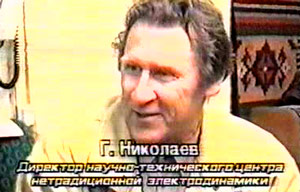

[Вернуться на главную страницу]
«Сибирский Коля»
"СИБИРСКИЙ КОЛЯ" НА "НЕПАХАНОМ" МАГНИТНОМ ПОЛЕ

Нет, не зря утверждают, что гениальное просто. Однажды томский физик Геннадий Николаев, изучавший проблемы электродинамики, распилил тороидальный магнит и, перевернув одну из его половин на 180 градусов, совершил выдающееся открытие: оказывается, в природе существует вид магнитного поля, о котором наука ничего не знала! Его болгарский коллега, директор Института по фундаментальной физике Стефан Маринов, познакомившись с открытием Николаева, окрестил магнит со смещенными полюсами в честь его создателя "Сибирским Колей", а самого Николаева причислил к Амперу, Максвеллу и прочим гениям физики.
Мы сидим в небольшой комнатке, которую выделил Геннадию Васильевичу один из томских заводов. На стенах множество плакатов, испещренных формулами. Столы заставлены всевозможными приборами, инструментами и совершенно непонятными для простого смертного приспособлениями. Здесь прочно прописалось научное открытие, которое, по скромному мнению самого автора, должно совершить переворот в фундаментальной физике.
- Любой студент, - рассуждает Николаев, - который занимается природой электромагнетизма, рано или поздно приходит к выводу, что наука не объясняет некоторые явления, проявляющиеся в этой среде. А она и не в состоянии сделать этого, поскольку утверждает, что существует только один вид магнитного поля, изученного еще в свое время Максвеллом. Но почему-то все забывают, что сам Максвелл говорил о том, что его расчеты неполные. То есть они не отражают истинной картины в полной мере. Я же утверждаю, что, помимо поперечного магнитного поля, существует и продольное. Причем его особенность такова, что оно действует на токи. Металлы остаются к нему равнодушными.
Подтверждая сказанное, собеседник берет в руки магнит и цепляет им лежащую на столе связку ключей. Ключи намертво "вцепляются" в магнит. Но эксперимент продолжается: Николаев находит на магните известную ему точку и - не чудо ли? - ключи падают на стол. Не веря своим глазам, я сам пытаюсь подцепить ключи тем местом, которое указал Геннадий Васильевич, - тщетно, словно в моих руках не магнит, а деревянный или пластмассовый предмет. "Вот это и есть "Коля", - с удовольствием наблюдая за моей растерянностью, поясняет Николаев. И тут же проводит очередной эксперимент. Взяв два обычных тороидальных магнита и повернув их таким образом, что их плоскости оказываются перпендикулярны друг другу, убеждает меня, что в таком состоянии магниты не взаимодействуют. Это - следствие из природы поперечного поля. Потом он проделывает то же самое с двумя "Колями", и я вижу, что в данном случае магниты притягиваются! А теперь работают продольные поля, комментирует Николаев.
Вот цитата из монографии Маринова, которую он написал после того, как ознакомился с открытием Николаева: "Цилиндрический магнит, который разрезан пополам аксиальной плоскостью и одна из половин перевернута, создает вблизи разреза магнитное поле, которое действует на токи продольными силами: с помощью которого можно будет создавать вечные двигатели".
Тут мало-мальски грамотный читатель имеет все основания иронично усмехнуться: как известно, все рассказы о "перпетуум мобиле" - чушь собачья. Но не стоит торопиться. Николаев показал мне так называемый униполярный двигатель, на который в свое время получил авторское свидетельство. Особенность его устройства такова, что он обладает положительной обратной связью, иными словами, после первоначального импульса может работать за счет энергии, которую сам же и вырабатывает. Тут же на моих глазах двигатель был разобран, и я убедился, что ничего общего с обычными электродвигателями этот диковинный агрегат не имеет. Но он работает, и опять же благодаря магниту Николаева, который расположен в самом центре.
- Маринов создал несколько подобных двигателей, - рассказывает мне почти детективную историю об австрийском физике Геннадий Васильевич. - И он, по всей видимости, уже очень близко подошел к тому, чтобы его вечный двигатель заработал. Но два года назад он исчез при весьма загадочных обстоятельствах. Была информация, что он выкинулся из окна многоэтажного дома. Но достоверного подтверждения этому факту мы не получили. Спустя какое-то время в Интернете было опубликовано его завещание. Но все, кто знал Маринова, сходятся во мнении, что никакого отношения к этому документу сам Маринов не имеет. Тем более что в нем не было ни слова о премии в сто тысяч долларов, которую Маринов пообещал тому, кто найдет фундаментальное уравнение для электромагнетизма.
Теперь самое время поведать еще об одном изобретении Николаева, которое мне удалось повертеть в своих руках. Представьте себе маховик весом в полкилограмма, ось которого не имеет видимых креплений - она висит в воздухе! Я раскручиваю маховик, и он совершенно бесшумно вращается в течение двадцати минут. "Это мое "ноу-хау", которое еще предстоит запатентовать", - поясняет автор, давая тем самым понять, что распространяться на эту тему он сейчас не будет.
А вот свое следующее изделие - омагничиватель воды, в котором используются продольные магнитные поля, демонстрирует по полной программе. В отличие от других изделий подобного рода омагничиватель Николаева резко снижает жесткость воды. У семян, обработанных пропущенной через него водой, всхожесть в три-четыре раза большая, чем при обработке обычной. Документ независимой экспертизы утверждает, что омагничиватели Николаева во время испытаний в отопительных системах приводили к тому, что начиналось самоочищение водопроводных труб от накипи!Тут же рядом на столе детская игрушка: модель грузовика с прицепом, между которыми нет никакой сцепки, но в то же время они связаны друг с другом. Эксперименты по взаимодействию двух магнитных полей привели к созданию магнитной сцепки, которая пока существует в виде детской игрушки.
Специалисты, знакомые с работами Николаева, с горькой иронией говорят, что Геннадий Васильевич намного опередил свое время. Все попытки убедить научную общественность в правоте своих взглядов на современную физику, пока никаких плодов не принесли и поэтому большинство его открытий далее стен лаборатории не выходит. В свое время работами томского ученого активно интересовались англичане и французы. Но в обоих случаях после довольно тесного контакта с Николаевым они резко обрывали сотрудничество. Разочаровывались? Или просто, собрав необходимую информацию, не считали нужным общаться с сибирским изобретателем дальше? И где гарантия, что его идеи и наработки уже не используются ими под собственной фирменной маркой? Ведь применение открытого Николаевым "второго поля" во много раз повышает эффективность различного оборудования. К примеру, МГД-генератор способен одновременно нагревать и перекачивать жидкости, и делает это в четыре-пять раз эффективнее, чем известные аналоги.
Но, пожалуй, самое главное, как утверждает ученый, он выявил природу гравитационного поля, которое напрямую связано со вторым магнитным полем. В это, равно как и в вечный двигатель, очень сложно поверить, но ведь не зря говорили великие, что тот, кто посчитал, что уже всего достиг, - мертвец. И можно только удивляться упорству томича, который вот уже почти двадцать лет пытается пробить стену непонимания. К примеру, в свое время он предложил для руководства ВАЗа ионизатор для карбюратора, благодаря которому бы на нет сводились вредные выхлопы и на десять процентов поднималась экономичность двигателя. Предложение это на ВАЗе отклонили. Зато сейчас озонаторы, насколько знаю, активно внедряют японские автомобилестроители, которые, как известно, зря деньги тратить не станут.
От отдела информации
Мы не имеем права утверждать, что работы Геннадия Николаева действительно несут в себе революционный переворот в физике, что с помощью его магнитов можно построить вечный двигатель и т.п. Техническая экспертиза такого рода открытий и изобретений - удел ученых, а не журналистов. Но хочется верить, что этот рассказ привлечет внимание серьезных исследователей, которые смогут объективно оценить и разобраться в достижениях "сибирского Максвелла". ("Труд-7", 04.11.1999)
[Вернуться на главную страницу]